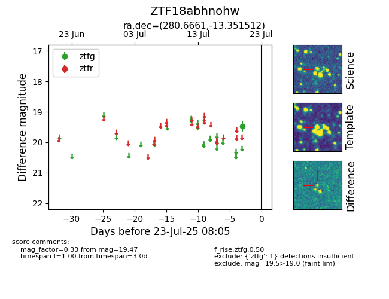

Target ZTF18abhnohw at 2025-07-23 12:37, see:
FINK: fink-portal.org/ZTF18abhnohw
Lasair: lasair-ztf.lsst.ac.uk/objects/ZTF18abhnohw
ALeRCE: alerce.online/object/ZTF18abhnohw
alt names
ZTF18abhnohw (ztf,fink)
coordinates:
equatorial (ra, dec) = (280.6661,-13.35151)
galactic (l, b) = (20.0418,-4.13789)
photometry
last atlasc=18.21, atlaso=17.58, ztfg=19.47
3 atlasc, 3 atlaso, 1 ztfg detections
